Ping = στέλνεις ένα μικρό «είσαι εκεί;» σε μια συσκευή ή ιστοσελίδα και μετράς σε πόση ώρα απαντά.
Όσα ping έχεις ξεκινήσει συνεχίζουν ακόμη κι αν δεν φαίνονται στην οθόνη. Η κουκκίδα στο «Δείξε» δείχνει την κατάστασή τους.
ms: χιλιοστά του δευτερολέπτου (όσο μικρότερο, τόσο καλύτερα).Μέσος / Ελάχιστο / Μέγιστο: οι χρόνοι απάντησης από την έναρξη.Διακύμανση (jitter): πόσο αλλάζει ο χρόνος από ping σε ping.Απώλεια: ποσοστό ping χωρίς απάντηση.Διακοπές: πόσες φορές σταμάτησε να απαντά (συνεχόμενες αποτυχίες = μία διακοπή).Διάμεσος: ο «μεσαίος» χρόνος. 95%: το 95% των απαντήσεων ήταν τόσο γρήγορες ή γρηγορότερες.
Κάποιες συσκευές ή ιστοσελίδες δεν απαντούν ποτέ σε ping, ακόμη κι αν λειτουργούν κανονικά.
Αποθήκευση ρυθμίσεων: κρατά διευθύνσεις, προβολή και χρόνους για την επόμενη φορά. Γίνεται μόνο αν το πατήσεις. Τα στατιστικά τα κρατάς με το κουμπί Εξαγωγή CSV (ανοίγει με Excel).